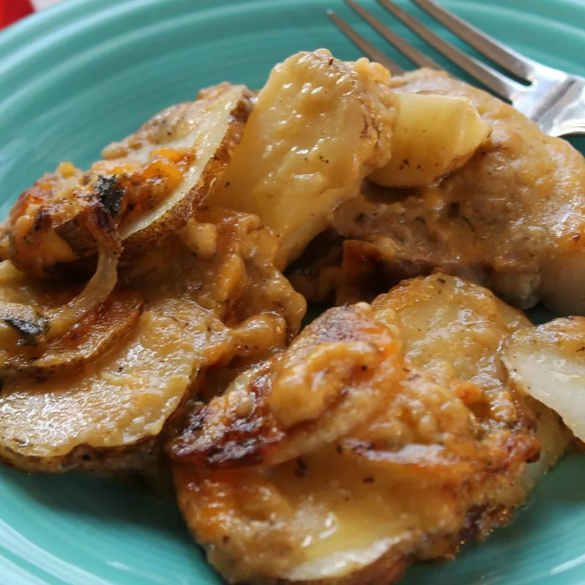

Pork Chops with Creamy Scalloped Potatoes

Tender pork chops are baked in the oven with creamy scalloped potatoes
with a hint of thyme and Dijon mustard.
- 5 tablespoons butter, divided
- 6 boneless thick-cut pork chops
- salt and ground black pepper to taste
- 2 teaspoons Dijon mustard
- 2 teaspoons dried thyme
- 3 tablespoons all-purpose flour
- 2 cups chicken broth
- ½ cup half-and-half
- 6 potatoes, peeled and thinly sliced, divided
- ½ cup diced onion, divided
- 1 cup shredded Cheddar cheese, divided